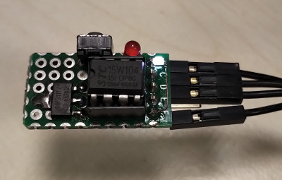

參考資訊：
http://plit.de/asem-51/
http://www.stcisp.com/stcisp620_off.html
https://sourceforge.net/projects/mcu8051ide/
main.s
.org 0h
jmp _start
.org 100h
_start:
mov c, p3.3
mov p3.2, c
jmp _start
.end
編譯
$ mcu8051ide --compile main.s
完成
